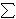
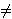
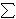

INPUT: toèka P i g-bitni prirodni broj k =  kj 2j, kj
 {0,1}
{0,1} OUTPUT: toèka Q = [k] P
- Q


- For j = g - 1 to 0 by -1 do:
- Q
[2] Q
- If kj = 1
then Q
Q + P
- Return Q
[k] P = P + P + ... + P (k pribrojnika).
Iz formula za zbrajanje toèaka vidimo da u sluèaju kada je P " ALIGN=TOP> Q, raèunanje koordinata toèke P + Q zahtijeva jedno raèunanje inverza u polju, te tri množenja u polju (1I + 3M) (zanemarujemo "trošak" za zbrajanje u polju, te množenje malim konstantama). Kada je P = Q, onda je trošak za udvostruèavanje toèke jednak 1I + 4M.Inverz u konaènom polju se raèuna pomoæu Euklidovog algoritma. Iako je njegova kompleksnost teoretski usporediva s kompleksnošæu množenja, u praksi je množenje ipak dosta brže od raèunanja inverza. Raèunanje inverza u polju može se izbjeæi uvoðenjem težinskih projektivnih koordinata, gdje (X, Y, Z) odgovara (X / Z2, Y / Z3). Tada jednadžba eliptièke krivulje (za char " ALIGN=TOP> 2, 3) postaje
Y2 = X3 + aXZ4 + bZ6.
Sada se kod raèunanja zbroja dvaju toèaka uopæe ne pojavljuje djeljenje. Na taj naèin, trošak za raèunanje P + Q postaje 16M, a za raèunanje [2]P trošak je 10M. Na primjer, koordinate toèke (X2, Y2, Z2) = [2] (X, Y, Z) se mogu izraèunati na sljedeæi naèin:
m1 = 3X2 + aZ4,
m2 = 4XY2,
m3 = Y4,
X2 = (m1)2
- 2m2,
Y2 = m1(m2
- X2) - m3,
Z2 = 2YZ.
Raèunanje višekratnika toèke na eliptièkoj krivulji, specijalni
je sluèaj opæeg problema potenciranja u abelovoj grupi.
Stoga se mogu primijeniti razni algoritmi koji su poznati za
taj opæi problem.
Najjednostavnija (i najstarija) efikasna metoda za raèunanje višekratnika toèaka koristi binarni zapis broja k. Zove se binarna metoda ili metoda uzastopnog kvadriranja. Na primjer, binarni zapis broja 100 je (1100100)2. Sada toèku [100] P možemo izraèunati kao [2]([2](P + [2]([2]([2](P + [2]P))))).
|
ALGORITAM: INPUT: toèka P i g-bitni prirodni broj k =  kj 2j, kj
{0,1} OUTPUT: toèka Q = [k] P
|
Broj "bitnih" operacija za raèunanje [k] P pomoæu ovog algoritma je O(log k log3 q).
Poznato je više opæih poboljšanja binarne metode. Meðutim, postoji je jedno poboljšanje koje je prilièno specifièno za eliptièke krivulje. Naime, za razliku od nekih drugih grupa, kod eliptièkih krivulja inverzna operacija (oduzimanje) ima doslovno isti trošak kao i originalna grupovna operacija (zbrajanje). To je zbog toga što vrijedi -(x, y) = (x, -y) za char " ALIGN=TOP> 2, dok je -(x, y) = (x, x + y) za char = 2.
Ova èinjenica nas motivira za umjesto binarnog prikaza
broja k, koristimo tzv. SD (signed digit) prikaz
oblika
k =
sj 2j,
kj
{-1,0,1}.
Jasno je da ovakav prikaz nije jedinstven. Npr. 3 = (0 1 1) =
(1 0 -1). Stoga možemo pokušati izabrati prikaz koji æe voditi
do što efikasnijeg algoritma. Reæi æemo da je SD prikaz
rijedak ili nesusjedni (non-adjacent form, NAF)
ako nema susjednih znamenaka razlièitih od 0, tj. ako je
sj sj+1 = 0,
za svaki j. Poznato je da svaki prirodan broj k ima
jedinstveni NAF, te da NAF ima najmanju težinu (broj
sj-tova razlièitih od 0), meðu svim
SD prikazima od k. Oèekivana težina NAF-a je g/3,
za razliku od binarnog prikaza kod kojeg je oèekivana težina
g/2.
 751.
Izraèunajte [100] P.
751.
Izraèunajte [100] P.
c0 = 0
For j = 0 to g do
cj + 1 =(kj + kj + 1 + cj) / 2
![]](symbols/rfloor.gif)
sj = kj + cj - 2cj + 1.
| Web stranica seminara | Andrej Dujella - osobna stranica |